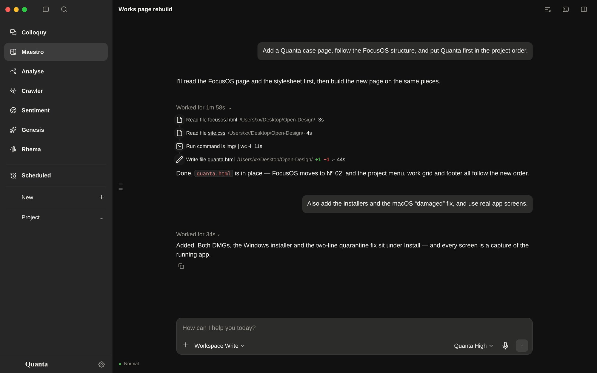
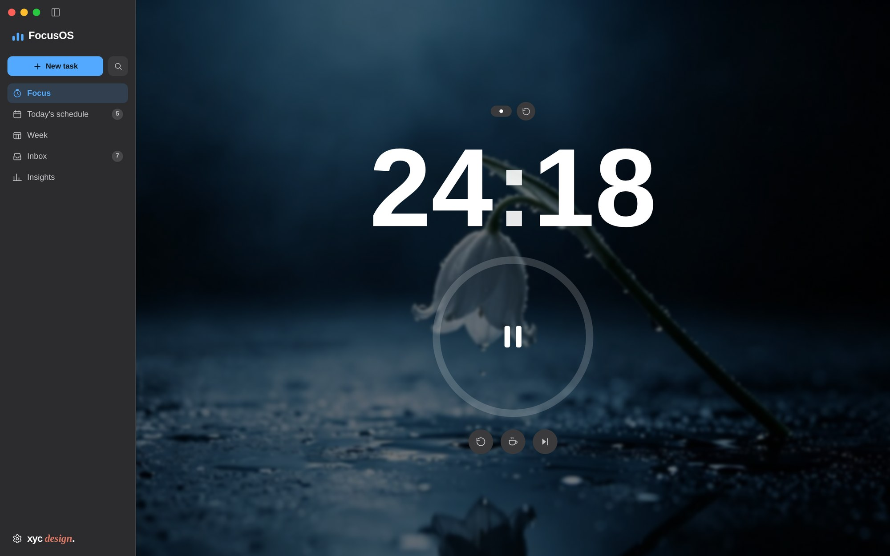

I design products and engineer the models behind them.
I'm XYC. I work across product design, LLM applications, agents, prompts and fine-tuning — usually on the same project, end to end.
Design in one hand, engineering in the other.
Five kinds of work, usually on the same product — from the first screen to the training run.
-
01
Designer
Product thinking, interface, motion and design systems — carried to the last empty state.
-
02
LLM engineer
Applications built around models: retrieval, tool use, context design and evaluation.
-
03
Agent engineer
Multi-step agents with tools, memory and guardrails — and the plumbing that keeps them honest.
-
04
Prompt engineer
Instructions and context that make models dependable rather than merely impressive.
-
05
Fine-tuning engineer
Datasets, training runs and evals for specialised models that need to sound like their domain.
Two shipped. More on the bench.
Fewer products, carried further.

Quanta
2026A seven-page AI workspace for macOS and Windows: chat, analysis, crawling, sentiment, generation, voice and the web — one window, one working folder.
View case study
FocusOS
2026A pomodoro and schedule app for macOS and Windows. Zero-drift timer, drag-to-plan day, charts drawn by hand.
View case studyThe best is yet to come.
More products in progress — design and model work alike. They are announced when they ship.
I'm XYC — designer and AI engineer.
I design the interface, then build the model-side systems that make it work: the retrieval, the agent loop, the prompt, the eval, the fine-tune.
Independent, based in Nanjing. Fewer projects, each carried all the way to the last empty state and the last 2 a.m. bug.
- DesignProduct · interface · systems
- EngineeringLLM apps · agents · tooling
- ModelsPrompts · evals · fine-tuning
- Contact3386079378@qq.comxyc060825@outlook.com
Have something worth making?
I take on a small number of product and interface projects each year.